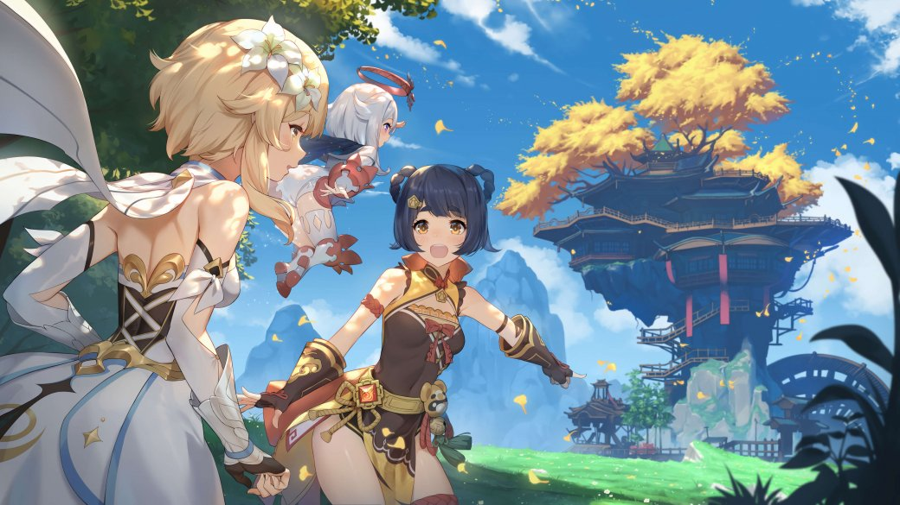

Genshin Impact (кит. 原神 Юаньшэнь, яп. 原神 Гэнсин, буквально: Первоначальный бог) — компьютерная игра в жанре action-adventure с открытым миром и элементами RPG, разработанная китайской компанией miHoYo Limited. Игра распространяется посредством цифровой дистрибуции по модели free-to-play, но имеет внутриигровой магазин, использующий реальную валюту. В основе Genshin Impact лежит система «гатя», называемая в игре «молитвой». Действие Genshin Impact происходит в фэнтезийном мире Тейват, который является домом для семи различных народов, каждый из которых связан с отдельной стихией и управляется отдельным богом, называемым во вселенной игры «Архонт». Сюжет рассказывает о герое по имени Путешественник, который странствует по бесчисленным мирам со своим братом или же сестрой-близнецом (в зависимости от того, кого игрок выберет в начале игры), прежде чем разлучиться в Тейвате. Вместе со своей спутницей-компаньоном Паймон Путешественник отправляется на поиски своего потерянного близнеца, одновременно участвуя в делах народов Тейвата.
История
Genshin Impact была анонсирована в июне 2019 года, и её выход был намечен на 2020 год на платформы Windows и iOS. Первый трейлер продемонстрировал открытый мир, сильно вдохновлённый игрой The Legend of Zelda: Breath of the Wild в плане атмосферы, внешнего вида и геймплея, значительную часть которого составляет исследование массивного открытого мира, выполнение испытаний и решение головоломок. В конце июня был запущен бета-тест.
На презентации Sony ChinaJoy 2019 был анонсирован выпуск игры на PlayStation 4. Версию для Nintendo Switch анонсировали позже, 13 января 2020 года. Также был анонсирован выход на PlayStation 5 на 28 апреля.
6 августа miHoYo официально подтвердили выход игры осенью 2020 года.
Разработка
miHoYo анонсировали разработку нового проекта на движке Unity в конце января 2017, спустя 3 месяца после выхода игры Honkai Impact 3rd. Компания заявила, что они намереваются сделать проект гораздо бо́льшего масштаба, чем предыдущие. Проектом, о котором шла речь, был Genshin Impact.
По словам разработчиков, на них сильно повлияли игры Grand Theft Auto и The Legend of Zelda: Breath of the Wild. Они стремились создать уникальный проект, который бы сильно отличался от Honkai Impact 3rd с точки зрения боевой системы, квестов, случайных событий и режима исследования.
Отзывы и популярность
Старт Genshin Impact стал самым массовым среди китайских игр, через несколько часов после запуска количество зрителей трансляций на Twitch превысило 110 тысяч. По информации компании Sensor Tower, мобильные версии игры за неделю заработали около 60 миллионов долларов США. Быстрее чем за две недели игра принесла своим разработчикам более 100 миллионов долларов США и окупилась. За первый месяц одна только мобильная версия игры принесла своим создателям 245 миллионов долларов. За два месяца мобильная версия игры принесла своим создателям 393 миллиона долларов США, став второй самой кассовой мобильной игрой за этот период.
Game Informer оценил игру на 9,25 из 10 баллов, в своей рецензии автор похвалил механику взаимодействия стихийных заклинаний персонажей и их влияние на мир, слабой стороной рецензент назвал сюжет. Рецензент из Destructoid в свой статье отметил, что самым успешным элементом игры является её боевая система, а вот мир в промежутках между заданиями кажется слишком пустым. Игра получила 7,5 балла из 10 от издания.
28 сентября 2021 года оценка игры в магазине приложений Google Play резко снизилась. Это было связано с накопившимися проблемами в игре; последней каплей стали награды на годовщину, которые игроки посчитали недостаточными для столь крупного события в истории игры. Игроки решили пойти на крайние меры для того, чтобы повлиять на разработчиков игры. Позже компания miHoYo Limited выступила с заявлением и сообщила, что для фанатов приготовлены особые подарки.